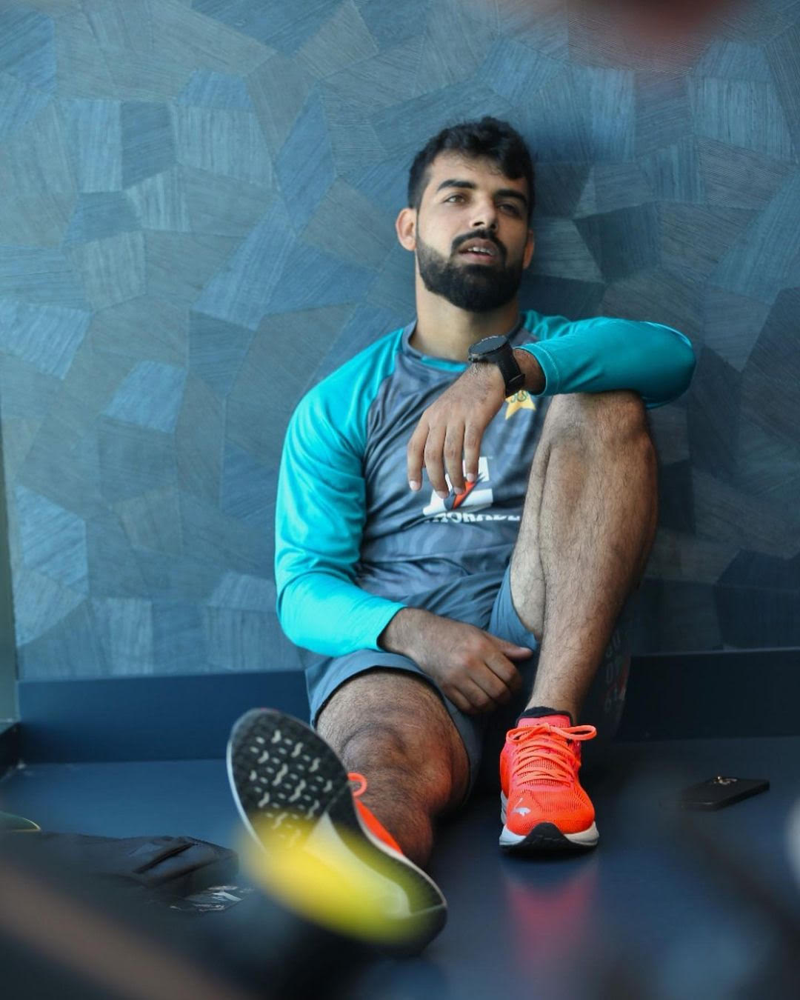
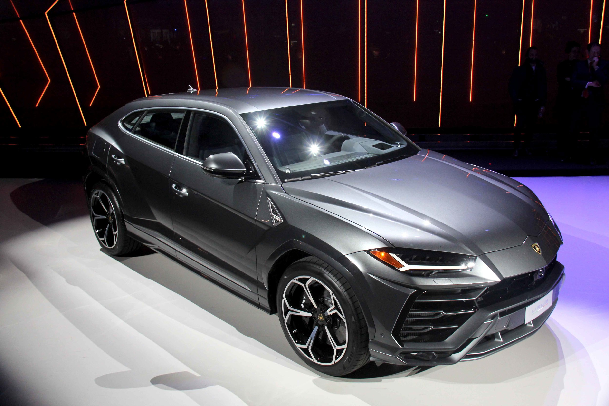
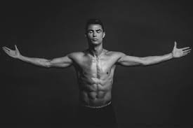

We often see some bautiful views in our Daily life.
They fully make us relax.
They touch our soul and we thought to spend our more time with them.
This is the beautiful view of sunset from the peak of a mountain.
This type of natural scenery make us spiritually comfortable.
I have uploaded the link of some beautiful views.
A beautiful viewShadab Khan is a top spinner of Pakistan cricket team.
He is a good fielder also.
Firstly i had some bad vibes about him but now i like him so much.
Nowadays he has also got training in batting and played very well.
At the coclusion,i want to say that Shadab Khan is a good all-rounder of PCB.
Here is the link of Shadab Khan Biography
Shadab BiographyI like sport cars.
My most favouite one is Lamborghini.
It include both Sport and casual cars.
In sports cars i like lamborghini Gallardo.
In casual I like Lamborghini URUS.
Here is the link of Lamborghini Cars
Cristano Ronaldo is a Football team player.
He is the toppest goaler in Football teams .
He has earned many prizes for his struggle.
He is one of the most popular person in the world.
To his unluck, He did not won the Fifa World cup 2022.
Here is the link of some interesting facts about Ronaldo
Good Morning tea is a common trend nowadays.
Tea is considered to be biggest weapon against cold in winter.
Some people are addicted to tea.
The most addicted person of tea includes Divers.
Morning tea make a full day refreshment for a Tea lover. Morning Tea
Here are the capture moments of Morning tea
Morning TeaAllah has blessed pakistan with all four seasons.
There was a time when it became very cold in winter in Pakistan.
Nowadays it bcome less severe due to more and more pollution.
Winter has its own taste in every human life.
Winter in PakistanWe have to control pollution to stay blessed with all four seasons in Pakistan .
.jpeg)
here is the link of winter cold pics of Pakistan
Winter in Pakistan